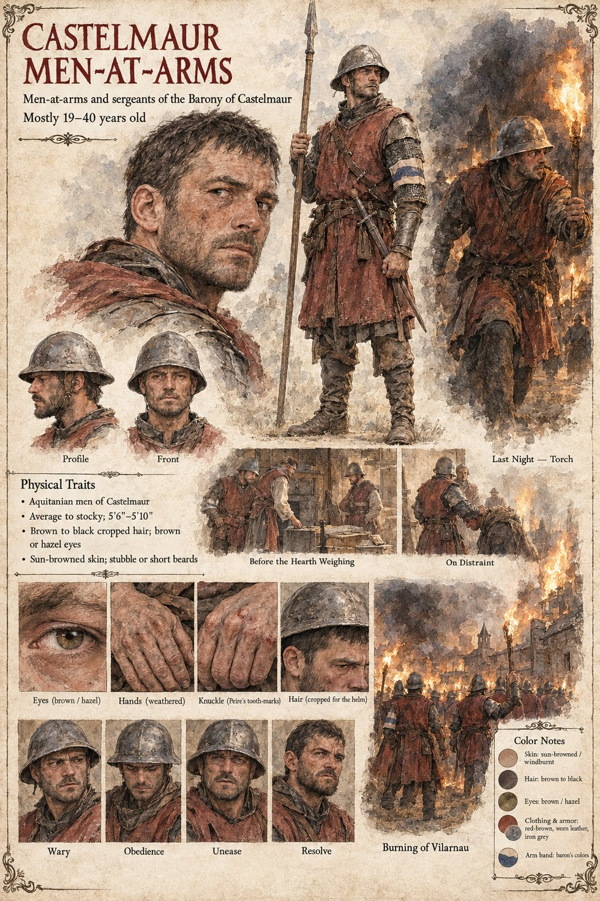

The Men-at-Arms of Castelmaur
Men-at-arms and sergeants of the Barony of Castelmaur · mostly 19–40 by their sheet
The baron's household troops: six who ride behind the bailiff to the first weighing, twenty who come with the baron on the twentieth of Jorren, a sergeant named Sicard with ten men and a cart who go down the east lane on the first of Kerren, and the forty who carry torches on the night of the burning. They are told what the barony is owed, and they do the work. Nine hearths are distrained in the forenoon, a pig screaming all the way to the cart. At the mill a boy of eight goes for one man's hand with his teeth and lays the knuckle open to the bone, and three of them are dead in the loft inside a dozen heartbeats.
On the night they are sent after the man responsible, the first six down a narrow lane find a thing in the road they have no instruction for and go down in a pile, and the forty behind them stop. Nobody wishes to be next. The thatch is put to the torch behind the line, and at dawn they are still in a ring about the moot-green, a hundred paces from the ashes of the nearest house, looking at a grey block with a charred wreath of ivy on it, exactly as it always stood. In forty men, not one of them can find it in himself to lay a hand on it. Their knight, Bertran, reports in the morning that the village is burned, the man escaped, and the stone cannot be broken.
Appears In

Related Subjects


Related Records

On the night of the torches, with the east lane burning behind them, Tomobe no Higaide stands in the mouth of the lane with a sword in each hand while the others, led by Gersenda, cross the plank into the dark; the men-at-arms in front of him have no instruction for this, and nobody wishes to be next.